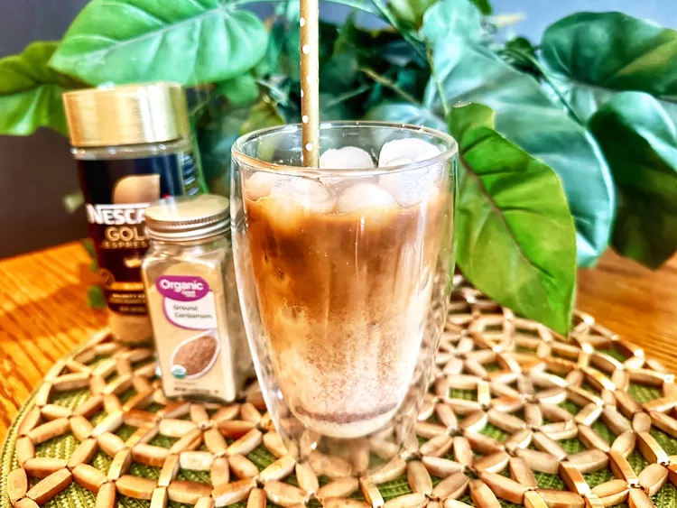

Home
Thai Iced Coffee

Description:
Thai Iced Coffee is a delicious and rich coffee drink that's sweet, creamy, and perfect for warm days. It combines strong brewed coffee with sweetened condensed milk, and is served over ice.
Ingredients:
- 1 cup of strong brewed coffee
- 2 tablespoons sweetened condensed milk
- 1 tablespoon evaporated milk
- 1 teaspoon sugar (optional)
- 1/4 teaspoon cardamom (optional)
- Ice cubes
- Whipped cream (optional)
- Ground cinnamon (for garnish)
- Vanilla extract (optional)
- Whole milk or half-and-half (optional)
Recipe:
- Brew strong coffee and let it cool.
- In a glass, mix the sweetened condensed milk and evaporated milk.
- Add the cooled coffee to the glass and stir well.
- Fill the glass with ice cubes.
- Top with whipped cream and cinnamon, if desired. Serve and enjoy!
Serve Cool and take a sip!!